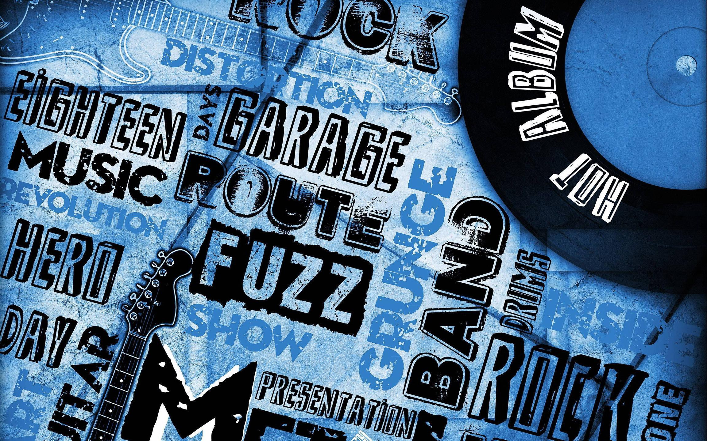

Musicians

History has given us some really notable music composers and performers the likes of which include names of people like Johann Sebastian Bach and Ludwig Van Beethoven. Just like everything else, music too evolved through the ages to churn out various genres. We'll be looking at some of the greatest modern musicians today.
Genres
Music comes in many different types and styles ranging from traditional rock music to world pop, easy listening and bluegrass. Many genres have a rich history, a cult following or music roots that go far beyond the 20th century. This will show you a comprehensive list that covers many of the most popular styles of music.
Instrument Sections
Orchestras are divided into four sections depending on the instruments used in them. The string section covers all of the stringed instruments, the woodwind section covers instruments which are blown through and use reeds, the brass section has metal wind instruments, and the percussion section which is any instrument you hit to play.